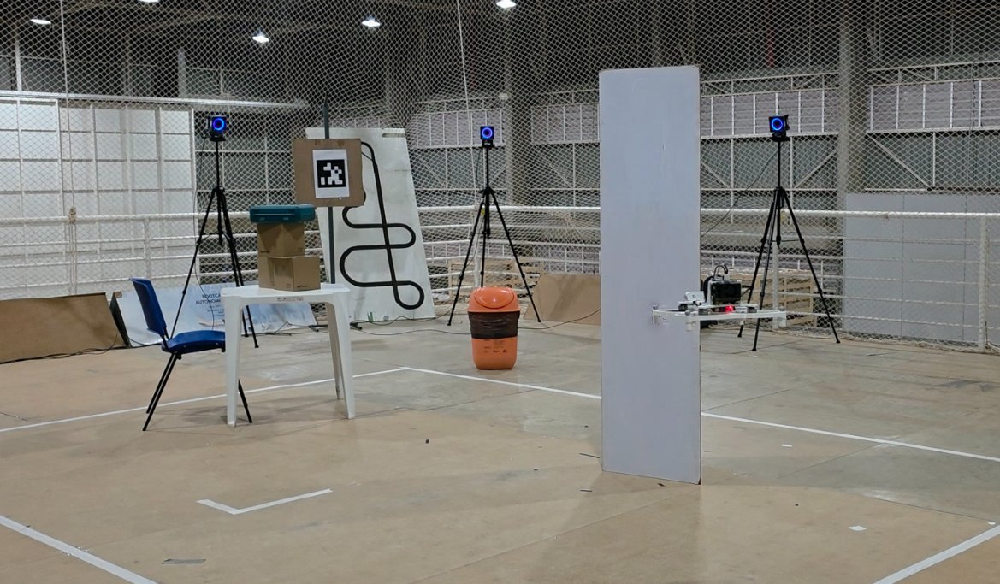

Explore the flight experiments ↗Vision-language navigation · IMAV 2026
VLN on the Fly
Natural-language goals become aerial motion through an onboard vision-language model, geometric planning, and a learned flight controller.
My contribution First-author work on an inspectable navigation stack connecting learned grounding to planning, control, and runtime supervision.
Approach & experimental scope
A quantized VLM grounds an instruction into an image region; depth converts that grounding to a 3D goal. EGO-Planner generates a trajectory and the pretrained RAPTOR policy tracks it through PX4. A supervisor gates handoffs between stages. The reported flight experiments used motion-capture localization; onboard model execution does not imply onboard localization.